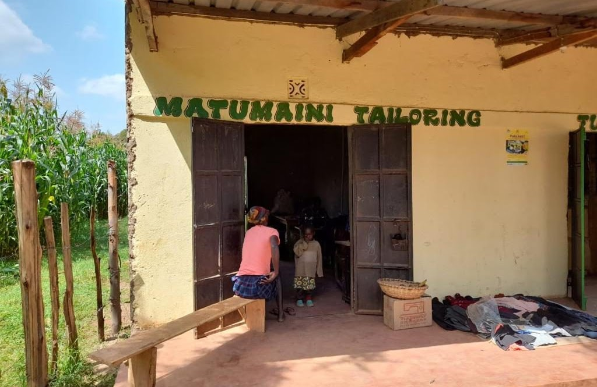
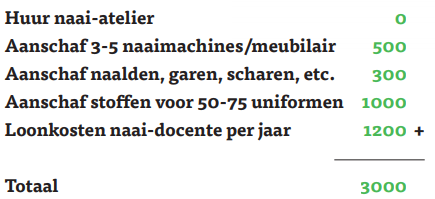

Projecten › Project Naaimachine
Project Naaimachine
Hoe breng je hoop in een uitzichtloze situatie? Soms is een naaimachine voldoende. We bieden vrouwen in Kenia (vaak weduwen met kinderen) de mogelijkheid om in hun levensonderhoud te voorzien. Kleinschalige hulp zorgt voor een levensgrote verandering van hun bestaan.

Het plan
In samenwerking met lokale vrouwen is Stichting Matumaini een klein naaiatelier begonnen in en rondom Kiminini, op het platteland van Kenia. Het onderkomen hebben we laten bouwen. We begonnen met een opleiding tot naaister: de eerste lichting bestond uit vier weduwen, die afhankelijk van hun leertempo in een tot twee jaar les kregen van een lokale, tot dan toe werkloze naaidocente.
De lessen zijn in de eerste plaats gericht op het vervaardigen van schooluniformen. In Kiminini worden kinderen niet toegelaten op school als zij niet over een uniform beschikken. Zo'n uniform kost geld, en dat is er bij de arme gezinnen niet altijd. Het is voor ons amper voor te stellen, maar het komt voor dat kinderen maar een deel van het jaar naar school gaan omdat ze hun uniform met een broertje of zusje moeten delen.
Zo draagt het naaiatelier bij aan de oplossing van een paar problemen:
- Kansarme vrouwen krijgen een baan en kunnen geld verdienen voor hun gezin.
- Voor kinderen uit achterstandssituaties komen betaalbare uniformen beschikbaar, en daarmee gloort er voor hen een nieuwe toekomst.
We zijn klein begonnen, maar wisten toen al dat het project voor velen een enorme impact zou hebben.
Geleidelijk op eigen benen
Stichting Matumaini financierde het eerste jaar van het project volledig. Vanaf het tweede jaar genereren de vrouwen van het naaiatelier inkomsten door het herstellen en verkopen van kleding. De financiële ondersteuning wordt stapsgewijs afgebouwd, zodat het naaiatelier uiteindelijk zelfstandig kan voortbestaan.

Update 2026: een zelfvoorzienend atelier
Zoals in de vorige update aangegeven, hebben we de focus van ons naaiatelier verlegd. Waar we eerst gericht waren op het opleiden van andere vrouwen tot naaister, richten we ons nu op het maken en verkopen van kleding, waaronder schooluniformen voor de kinderen.
Nog altijd mogen kinderen niet naar school als zij geen uniform hebben. Het komt vaak voor dat een gezin financieel maar ruimte heeft voor één schooluniform. Het gevolg is dat iedereen in hetzelfde uniform naar school gaat, en vaak maar voor een bepaalde periode van het jaar. U kunt zich voorstellen dat dit bij leeftijdsverschillen in een gezin heel ongewenste situaties oplevert. De uniformen die in ons naaiatelier worden gemaakt, geven we aan gezinnen in bruikleen, zodat ze na het schoolseizoen hersteld en doorgegeven kunnen worden aan een ander gezin. Zo kunnen we voor meerdere gezinnen een enorme zegen zijn.
Waar we voorheen alles voor het atelier financierden (vergunningen, salaris van de naaister en manager, inrichting en inboedel, materialen en stoffen), hebben we in 2025 de omslag gemaakt naar een zelfvoorzienend atelier. Matumaini steunt dit project nog steeds door het salaris van de naaister te betalen.
Update september 2024
Tijdens ons vervolgbezoek aan Kiminini kon een bezoek aan het naaiatelier natuurlijk niet uitblijven. Na constructief overleg met de leiders daar hebben we besloten het concept een beetje aan te passen. Waar we eerst gericht waren op het opleiden van andere vrouwen, richten we ons nu meer op het maken van kleding, vooral schooluniformen voor de kinderen.
Nog altijd mogen kinderen niet naar school zonder uniform, en het komt vaak voor dat een gezin financieel maar ruimte heeft voor één uniform. Het gevolg is dat iedereen om de beurt in hetzelfde uniform naar school gaat, dus maar een bepaalde periode van het jaar. De uniformen die in ons naaiatelier worden gemaakt, geven we aan gezinnen in bruikleen. Na het schoolseizoen worden ze hersteld en doorgegeven aan een ander gezin. Zo kunnen we een enorme zegen zijn voor een gezin.
Update juli 2021
Tijdens ons bezoek aan Kiminini in het najaar van 2019 hebben we de laatste puntjes op de i gezet om met dit project van start te gaan. We vonden een geschikte plek voor het naaiatelier, namen een kleermaker in dienst voor de periode van een jaar en vroegen een vergunning aan om een naaiatelier te mogen starten. De kleermaker leidde twee studenten op tot naaister, met als doel dat zij schooluniformen leren maken. Kinderen krijgen die in bruikleen van het atelier en leveren het uniform weer in als zij eruit zijn gegroeid.
Voor de aanschaf van twee goede naaimachines, bijbehorende tafels en het nodige andere materiaal is ruim 55.000 Keniaanse shilling gedoneerd. Al na een paar maanden kregen we vanuit Kiminini het verzoek het project zo snel mogelijk uit te breiden: er stonden dagelijks nieuwe studenten aan de deur die ook opgeleid wilden worden in het kleermakersvak.
Steun het project
Met uw gift op IBAN NL23 RABO 0385 3969 37 t.n.v. St. Matumaini kwa Turkana, onder vermelding van „naaiatelier”, helpt u het salaris van de naaister te betalen.
Shukrani! Bedankt!